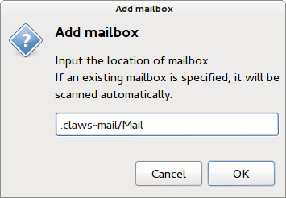
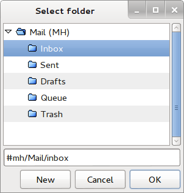
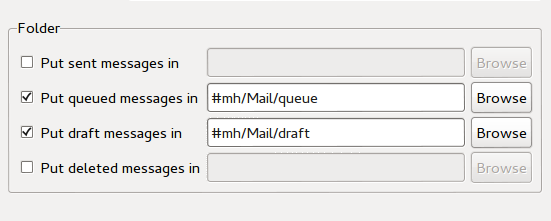

We discovered that Claws Mail, the email client in Tails, stores plaintext copies of all emails on the remote IMAP server, including those that are meant to be encrypted.
- When sending an email, Claws Mail copies the email in plaintext to the sending queue of the IMAP server before encrypting the email. Claws Mail deletes this plaintext copy after sending the email.
- Claws Mail drafts in plaintext on the server. An email can be
saved as draft either:
- Manually by clicking on the Draft button when composing an email.
- Automatically if you selected the automatically save message to Draft folder option in the writing preferences. This option is deselected by default in Tails.
All users of Claws Mail using IMAP and its OpenPGP plug-in are affected.
Users of Claws Mail using POP are not affected.
Unfortunately, we were not yet able to fix the problem automatically and for everybody. This would require to either modify Claws Mail or to migrate to a different application. Refer to the workarounds section to solve this problem in your setup and please warn others around you.
Workarounds
Verify the content of your Drafts folder
First of all, verify the content of the Drafts folder on the server, either through Claws Mail or through the web interface of your email provider. Delete any plaintext email that might have been stored against your will in this folder until now.
Then apply one of the other two workarounds to prevent more leaks in the future.
Use POP instead of IMAP
Claws Mail can connect to the email server using either the IMAP or POP protocol.
- With IMAP, Claws Mail constantly synchronizes with the server and displays the emails and folders that are currently stored on the server. IMAP is better suited if you access your emails from different operating systems.
- With POP, Claws Mail downloads the emails that are in the inbox on the server and possibly removes them from the server. POP is better suited if you access emails from Tails only and store them in the persistent volume.
To know more, see also this Yahoo! Help page on comparing the differences between POP and IMAP.
POP is not affected at all by this security problem. When using POP, only encrypted emails are sent to the server. So consider switching to POP if you have an email account dedicated to your activities on Tails. To do so:
Choose File ▸ Add mailbox ▸ MH… to create a local mailbox where to download your emails.
To store the mailbox in the persistent volume, specify .claws-mail/Mail as location. Make sure to type the . before claws-mail/Mail.

Choose Configuration ▸ Edit accounts…, select your IMAP account in the list of accounts, and click Delete to delete it. Doing so does not delete any email stored on the server.
Click New and configure this new account as specified by your email provider.
- In the Basic tab, make sure that the Protocol option is set to POP3.
In the Receive tab, click on the Browse button of the Default Inbox option and select the Inbox folder of the mailbox that you created in step 2.

If you want to keep a copy of the received emails on the server, verify the preferences in the Receive tab. We recommend you to disable the Remove messages on server when received option until you make sure that the emails are stored in the persistent volume.
Close the preferences dialog and the list of accounts to go back to the main window of Claws Mail.
Click on the Get Mail button to download all emails from the inbox on the server. Emails in other folders are not downloaded.
Use local Drafts and Queue folders
If you want to continue using IMAP, you should configure your IMAP account to use Drafts and Queue folders stored in Tails instead of on the server. To do so:
Choose Add mailbox ▸ MH… to create a local mailbox where to save your drafts and queued emails.
To store the mailbox in the persistent volume, specify .claws-mail/Mail as location. Make sure to type the . before claws-mail/Mail.
Choose Configuration ▸ Edit accounts…, select your IMAP account in the list of accounts, and click Edit to edit its preferences.
Select Advanced in the left pane.
Select the Put queued messages in option, click Browse, and select the Queue folder of the MH mailbox.
Select the Put draft messages in option, click Browse, and select the Drafts folder of the MH mailbox.

Long term solution
As for the possible long term solutions to this problem, we are considering:
Getting the development team of Claws Mail to fix the problem upstream. We contacted them about this problem already. Please help them provide a technical solution if you can.
Replacing Claws Mail with Icedove (the name of Mozilla Thunderbird in Debian). We have been willing to do so for years and this problem motivates us to move faster.
Technical details
Leak through the sending queue
When sending an email from an IMAP account, Claws Mail does the following:
It connects to the IMAP server and stores a plaintext copy of the email in the Queue folder on the server.
It encrypts the email locally.
It sends the encrypted email through the SMTP server.
It connects to the IMAP server and stores an encrypted copy of the email in the Sent folder on the server.
It connects to the IMAP server and deletes the plaintext email saved in step 1 from the Queue folder.